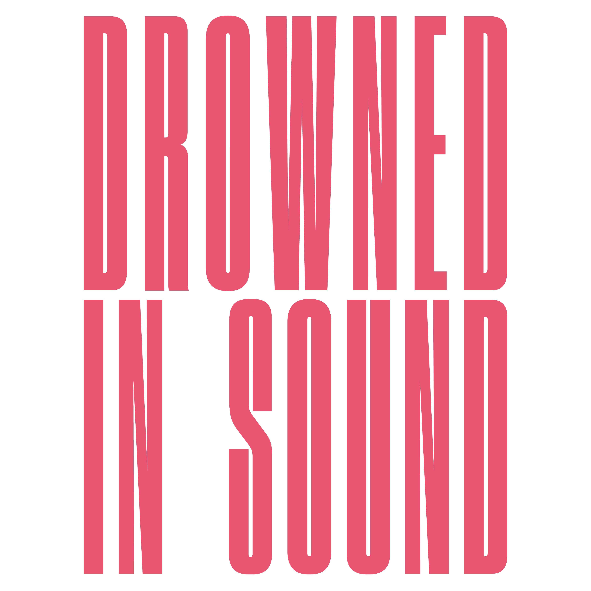
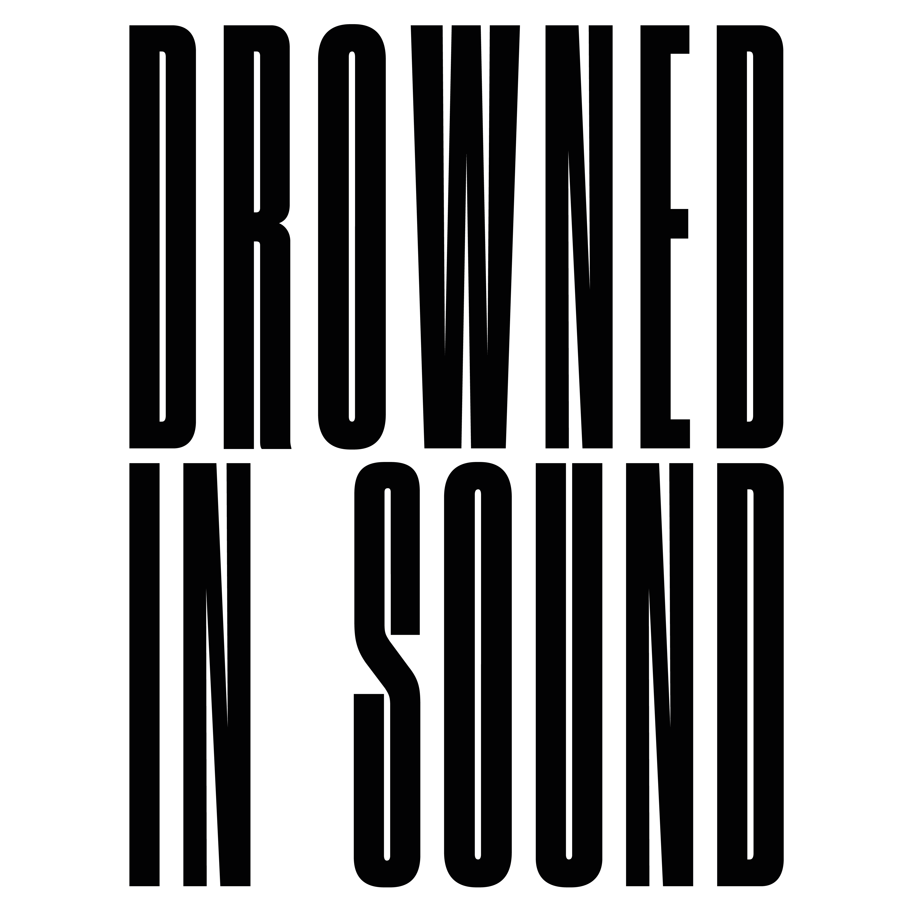
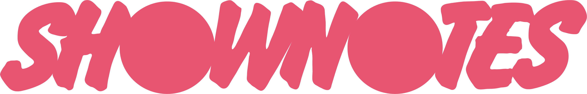
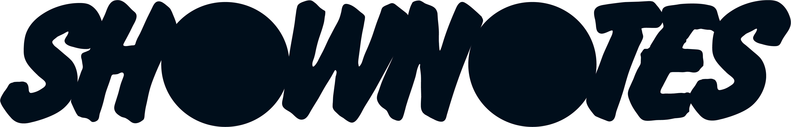

Brand kit
Drowned in Sound and SHOWNOTES: how both brands look, sound and behave, written for the web designer. Updated 2 November 2026. A first full draft, so anything unconfirmed says so.
Who we are
Drowned in Sound
Started in 1998 as a website recommending music. Now a non-profit publication: a weekly newsletter, a podcast network and a community forum. It supports independent artists and brands, especially in the UK and Ireland.
It follows threads from music to systemic questions: fairness in the industry (pay, gender representation, access), platform power, and how music fans can use their collective power. It is a publication, not an activist organisation.
Shows: The DiS Podcast, Sounds Like Change, How Music Can Save The World. Related: The Sounding, Association of Music Editors, Neptune Prize.
SHOWNOTES
The printed magazine (Issue 1 is 64 pages) and its stockist map of about 500 venues across the UK, where copies are picked up. Built to be loud on paper and plain on screen: big flat shapes, hot pink and near-black, a serif with real contrast.
A stockist map of the venues sits on the SHOWNOTES site.
The idea behind both: culture and working people are upstream from billionaires, and music fans are an untapped political force. Hope over guilt. Another world is possible.
The voice
Like someone explaining something they care about at a pub, not performing on a stage. It thinks out loud, credits other people, names names, and ends with a real question or a plain sign-off, never a slogan.
People first, not concepts. Specific and recent over name-dropping. Facts checked, sources cited. Hope over guilt. Dry humour, tucked into brackets.
Say "campaigner", not "activist". Not "content creator".
- Em-dashes. Use a comma or a hyphen.
- PR voice: "we're thrilled", "exciting news", "stay tuned", "a game-changer".
- Corporate words: "stakeholder ecosystem", "leveraging", "synergy".
- "At DiS, we believe...". Slogans and catchphrases.
- Emojis in body text.
Logos
Drowned in Sound
Three main versions with transparent backgrounds, 4500 x 4500 px PNG. On black use the pink one.





More in the zip: the logo on black, The DiS Podcast logo, a YouTube banner and The Sounding.
SHOWNOTES
A wide wordmark (6.2 to 1), so give it width: 240 to 300 px on a 1080 px asset. Keep clear space of at least the height of the "O" circle on every side. The original files are square with empty space around the wordmark; the "cropped" versions have it trimmed.









Rules for every logo
Never stretch, recolour, outline or add shadow, glow or gradient. Place on black, pink, paper or a photograph with enough contrast. On video: small, top right, about 256 px tall on a 1080 x 1920 canvas, aligned to the right margin. Druk, the typeface in the logo artwork, is for the logo only.
Colour
Flat colour only. Hot pink and near-black do most of the work, with paper white for reading. There are two pinks: the print file uses #EE5D75 and the logo files use #E95470. Next to the logo on screen, use the logo's.
Contrast (WCAG: 4.5 for body text, 3 for large text)
15.7:1, passes for body text
5.3:1, passes for body text
5.9:1, passes for body text
5.3:1, passes for body text
20.8:1, passes for body text
3.5:1, large text only
2.9:1, fails
Rules
- Pairings that work: pink on black, black on pink, paper on black, ink on white.
- Pink is for what should be read first: numbers, a name, one word. Use it sparingly.
- Never grey text on a dark background. For a second level, change size or weight, not colour.
- No gradients, drop shadows or glows. (A soft glow on map pins is a map-only choice.)
Type
No font files are in the download, on purpose: the fonts are licensed. See FONTS.md for sources and licences. This page is set in Playfair Display, the free stand-in for Abril Text.
| Role | Font | Use |
|---|---|---|
| SHOWNOTES titles | Druk XX Cond Super | Card titles, map headings. Self-hosted on the live map site (web licence confirmed by the original designer). |
| Body, subtitles and credits (SHOWNOTES and DiS, from 2 Nov 2026) | Abril Text (Regular, Italic, SemiBold Italic, Bold) | Everything not a title or label. Bold for video subtitles. Pink italic for credits and asides. Adobe Fonts web project "SHOWNOTES map". |
| SHOWNOTES labels | Flash SB / LTC Flash | Section labels and numbers. |
| Web stand-ins | Abril Fatface, Playfair Display | Google Fonts, until real files are cleared. |
| DiS video headlines (new) | Alternate Gothic No2, capitals | Podcast video titles. Licence for web and video use to be confirmed. |
| DiS (old, retiring) | Francois One (capitals), Cardo | Old carousels only. |
Fallback for Druk on the web: League Gothic Condensed. Body text is never smaller than 16 px.
17 venues, all free to pick up
Playfair Display, the free stand-in for Abril Text, shown here
Grid, shapes and flat colour
Six columns. 60 px margins and 24 px gutters on a 1080 px asset (scale proportionally for web). Sizes move in multiples of 8. Everything aligns to column 1 at the left. One headline per layout.
Shapes
Flat, one colour, and they run off the page edge. They never contain text and never have gradients or shadows. They sit behind or beside the layout, not around the words. In print, labels like FEATURE sit in a tilted white wedge; on screen, set labels as plain text.
Solid, often one huge one bleeding off a corner.
A right angle with one slanted cut.
12 to 16 points. Flags a recommendation.
A row of shrinking circles.
Social cards and the map
Feed card: 1080 x 1440 (3:4), exported at 2160 x 2880. Black background, pink logo top left, 60 px margins. One big headline in pink and one line of support in paper. Pink for what should be read first. A plain closing line, never a slogan. Story or Reel: 1080 x 1920 (9:16). Old DiS carousels: 1080 x 1350 (4:5).
Map card, top to bottom
- Pink logo, top left.
- City name, big, pink.
- One italic line: the venue count, in paper.
- The map: roads and rivers in dim pink, numbered pink circles with a black ring.
- Two columns of numbered venue names, numbers pink, names paper.
About 30 venues per card. London (111 venues) is a six-slide carousel.
Video and podcast
HERE
Reels safe zone, 1080 x 1920. Shaded areas are kept clear.
- Keep clear: 220 px top, 450 px bottom, 35 px sides. A column of buttons sits bottom right, 100 px wide from about 750 px up, so text stops 135 px from the right edge.
- Headline: Alternate Gothic No2, capitals, 232 px (176 px with a guest line), line height 88%, up to four lines. The last word may be pink. Guest line 80 px, pink.
- Subtitles: Abril Text Bold 72 px, paper on one continuous black strip, no gaps, one pink word allowed. None on 16:9.
- Titles stay up for 5 seconds or more. No end-card box and no "link in bio"; the caption carries the link.
- Logo: small, top right, about 256 px tall. Open and close each video with it.
- Grade: flat, richer film colour on both cameras, with the wide shot matched to the main camera and skin a touch less red.

Web build notes
Accessibility
Body text 16 px or larger. Contrast 4.5:1 or better for body text. Never grey text on dark. No information carried by colour alone. Respect reduced motion. Test at 400 px wide.
Behaviour
Flat colour, no gradients or shadows (except the map pin glow, which is map-only). Shapes are decorative and text is never inside a shape. Keep layouts left-aligned to one column edge. Big type, short lines.
tokens.css
--pink: #E95470; --pink-print: #EE5D75; /* print only */ --black: #121211; --ink: #010204; --paper: #F1E8F3; --white: #FFFFFF; --logo-white: #F9FDF4; --grid-columns: 6; --margin: 60px; --gutter: 24px; --step: 8px; --min-body: 16px;
The full file, with font stacks.
Do and don't
- Black backgrounds, pink for emphasis, paper for reading.
- One big headline, one supporting line.
- Name real people, places and records. Short sentences.
- Align to one left edge. Sizes in multiples of 8.
- Check contrast every time.
- Say what is not known yet, in plain words.
- Put text inside a shape or on a tilted shape.
- Use gradients, shadows, glows or outlines.
- Use grey text on dark backgrounds.
- Set live text in Druk.
- Use em-dashes, "we're thrilled", "exciting news" or "stay tuned".